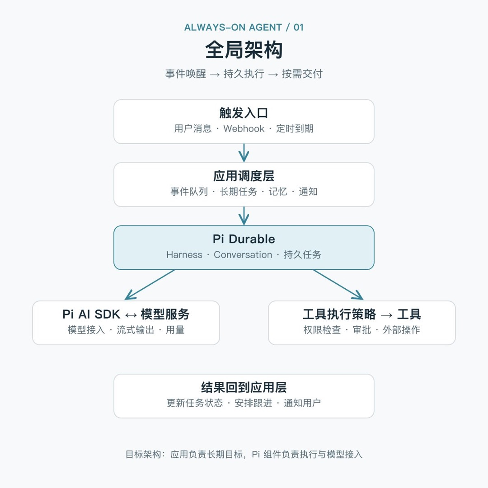
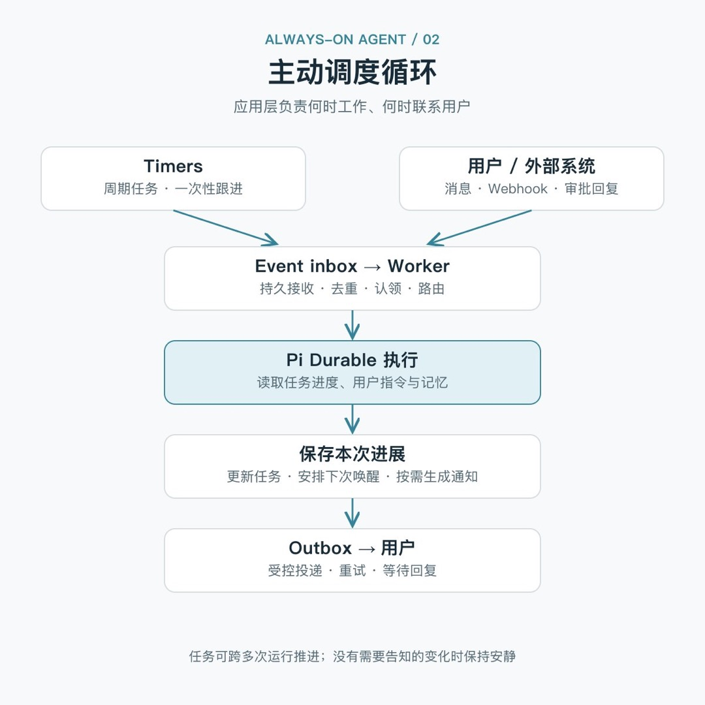
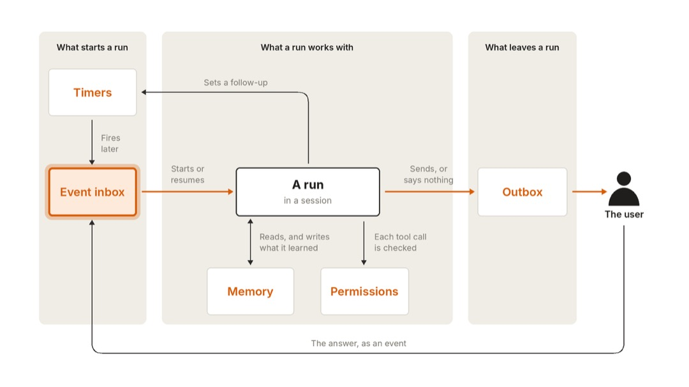
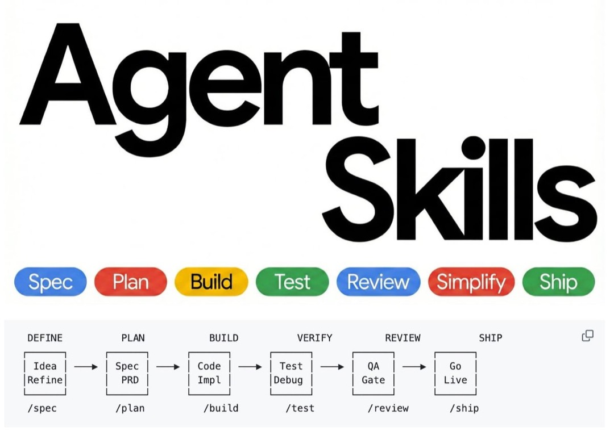

本期速览
01 Pi Durable组装常在线Agent
02 Agent Skills规范编码工程流程
03 GLM-5.3-Flash反代调用被封号
04 Grok Bot用形式化验证守质量
01｜Pi Durable组装常在线Agent
来源（X） · @verysmallwoods · 2026-11-16 00:45
Agent 平时等待，收到消息、Webhook 或定时事件后唤醒，推进任务、保存进度，再决定何时继续，以及是否通知用户。
各个组件可以这样组合：
- Conversation 保存讨论，Submission 接收输入，用稳定 requestId 关联重复请求。
- Harness 调度 GenerationTask 和 ToolTask，完成模型生成、工具调用与后续执行。
- Durable Storage 保存历史、检查点和结果，进程重启后重新打开存储并恢复。
- Pi AI SDK 统一接入模型服务。
应用层负责事件收件箱、长期任务、记忆、审批和通知；定时唤醒可结合持久任务实现，周期规则由应用管理。外部操作还需要幂等或结果核对。
配图分三层：全局架构、主动调度循环、可恢复执行核心。
或许我会尝试在 ChatOllama 中实现一下。



引用内容
九原客 @9hills
之前在 raft build 上就看到类似的设计。
https://claude.com/resources/articles/building-always-on-agents


02｜Agent Skills规范编码工程流程
来源（X） · @Chenfacai0 · 2026-11-15 22:43
这套 Skills 可供 Claude Code、Codex、Cursor 等 AI 编程工具调用，让 Agent 从需求分析一路到最终上线，全程都有一份清晰的工程规范可循。
整个项目按软件开发流程来组织：
① 需求分析
需求不明确就先发问，把功能、约束和验收标准理清楚，形成规格文档，而不是上来就动手写。
② 任务规划
将大需求切成可执行的小任务，把依赖关系和完成条件交代明白。
③ 编写代码
以小步迭代的方式实现功能，配合测试驱动开发，防止一次改动过多内容。
④ 测试验证
跑真实测试，修 Bug 时补上回归测试；网页项目还能借助浏览器开发工具查看运行状态、控制台报错和网络请求。
⑤ 代码审查
排查代码质量、安全风险、性能问题以及不必要的复杂度，压低后续维护成本。
⑥ 部署上线
覆盖 CI/CD、版本管理、分阶段发布、回滚方案以及上线后的监控。
25 个 Skills 当中，24 个负责具体的工程流程，另有一个 Meta Skill，专门根据当前任务挑选合适的技能，不必每次都全量加载。
项目还给出了 /spec、/plan、/build、/test、/review、/ship 等命令，把这些步骤串联起来。
它为 Coding Agent 添上了具体的执行规则和验证检查点。但 Skills 本身并不能担保代码质量，测试和上线结果仍旧需要实际核验。
项目采用 MIT 开源协议。
GitHub：https://github.com/addyosmani/agent-skills

03｜GLM-5.3-Flash反代调用被封号
来源（X） · @zg0820 · 2026-11-15 23:16
Magpie反代调用GLM-5.3-Flash直接触发风控封号
圈内已出现批量踩坑案例：通过Magpie反代调用智谱GLM-5.3-Flash时，接口直接返回405错误，错误码3012，官方判定原因为“异常行为导致请求被拦截” 该封禁为账号级风控，命中后ZCode官方App内同步失效，不会自动解除，唯一解封渠道只有联系官方客服申诉
特别提醒：别拿自己的付费订阅账号赌风控，GLM风控下手极狠，反代调用基本一封一个准，号封了订阅直接打水漂
04｜Grok Bot用形式化验证守质量
来源（X） · @alacheng · 2026-11-16 15:59
土豆姐在AI Engineer Code Summit 上的演讲，标题是 《All Code Is Slop (Except Mine)》（所有代码都是垃圾，除了我的）
她讲的是 SpaceXSI 的 Grok Bot 团队如何用 AI coding agents 大规模写代码，同时不牺牲质量。（看来他们已经大量的在生产环境下用形式化验证保证质量了）
-有了 AI agent 后，任何人都能变成“编码机器”，产量暴涨（她自己一个月提了约 3000 个 PR，团队一个月合并约 11,000 个 PR，回滚率约 0.5%）。
-真正的挑战不是“写得快”，而是在产量暴涨的同时守住甚至提升代码质量。
-关键不是盲目信任 agent，而是通过改善 agent 的环境来建立“earned trust”。
她用一个倒金字塔说明应该把精力放在哪里（从最重要到最次要）：
-代码库本身（最重要）：好的 API 设计、架构、重构。Agent 会模仿代码库里的现有模式，垃圾模式会被快速复制传播。
-静态分析 / 强制约束：lint 规则、类型系统、编译器、测试、CI。把容易误用的东西直接禁掉（例如他们在 Dune 框架里几乎全面禁用了 React 的 useEffect）。
-验证：运行时验证 + 形式化验证（他们用了 TLA+ 和 Lean）。把 token 更多地花在验证而不是生成上（提到日常 token 使用约 70% 用于验证）。
-文字规则（rules、skills、AGENTS.md 等）：最后才用，因为这些不可强制执行，容易过时。
实用做法举例：
-用文件夹结构和 lint 规则强制隔离（比如 Electron 的 main 和 renderer 不能互相导入）。
-尽量少写注释，改用能给出明确错误信息的 lint 规则，引导 agent 修根本原因而不是打补丁。
-让 agent 自己跑应用、用 DevTools、看截图/视频来验证，而不是只看代码。
-先把基础打好（干净的代码库 + 强约束 + 验证），再做自动化的“software factory”，否则自动化只会更快地生产更多垃圾。
演讲视频：
https://www.youtube.com/watch?v=O_zcc6Xl12g
视频里提到的形式化验证工具：
TLA+ 和 Lean 都是形式化验证工具，用来从数学层面证明“这个系统/代码在某些情况下一定是对的”，而不是只靠测试去碰运气。
TLA+验证：
主要用于模型检查（model checking）核心用户流程的状态机。
gorkbot应用的典型例子：跨设备、跨平台的通知流程。
做法是把用户行为/系统状态变化建模成状态机，然后检查在各种可能的事件顺序下，系统是否始终满足预期的性质（比如不会丢通知、不会出现不一致状态等）。适合发现“并发/时序”类问题。
Lean验证：
主要用于对具体算法做形式化证明。
gorkbot应用的典型例子：他们自己写的一个虚拟化库（virtualization library，用于长列表只渲染可见项）。用 Lean 证明这个算法不会出现闪烁（flicker）和抖动（jitter）问题。
TLA+：官方有《Specifying Systems》和一些不错的入门教程。
Lean：可以看《Theorem Proving in Lean 4》或社区的数学形式化项目。
05｜agy CLI用Go编写脱离编辑器
来源（X） · @ChuckBass8808 · 2026-11-16 08:03
1 大家对 agy 的一致评价是Harness像毛坯房，但里面的 模型 Gemini 4 Carbon本身太强了。预感两个月后 harness 会追上来
2 当看到 agy 彻底地抛弃了 VS Code 界面，就感觉他们有前途了 哈哈
今年 Google 推出 Antigravity 2.0 独立桌面端 + Go 语言编写的 agy CLI，彻底摆脱了传统文本编辑器的包袱
CC Switch（已更新至支持 agy 账号切换、用量统计与 MCP/Skills 同步）